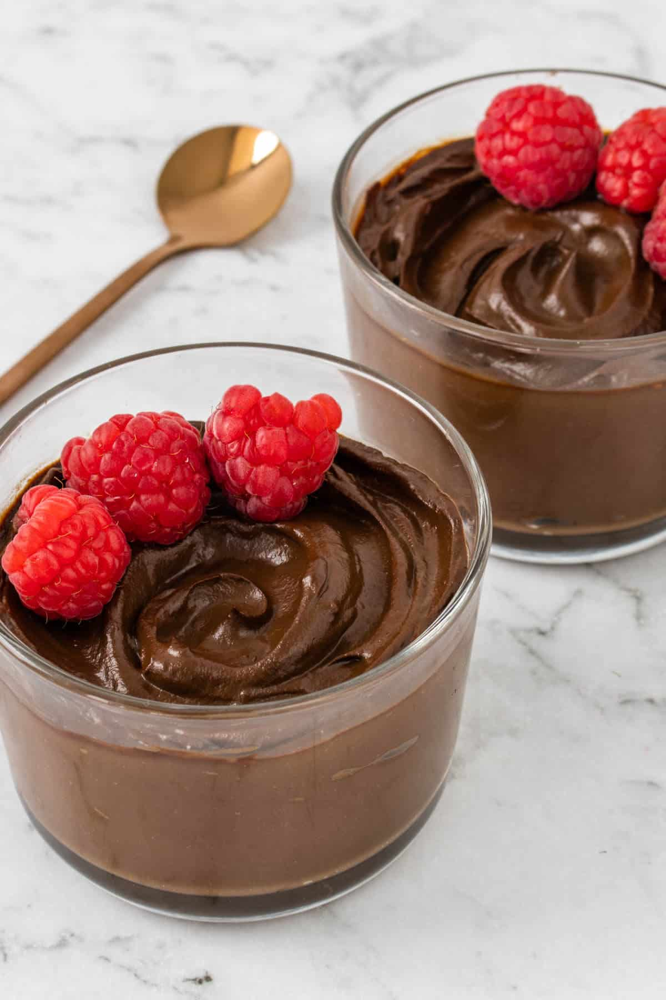

Chocolate Avocado Mousse
Silky, rich chocolate mousse made with ripe avocados, cacao powder, and maple syrup — zero guilt required.
Ingredients
- 2 ripe avocados
- 3 tbsp raw cacao powder
- 3 tbsp maple syrup
- 1 tsp vanilla extract
- Pinch of sea salt
- 2 tbsp almond milk
Preparation
- Blend all ingredients until completely smooth.
- Taste and adjust sweetness with more maple syrup.
- Spoon into glasses and chill for 20 minutes.
- Top with berries or cacao nibs and serve.